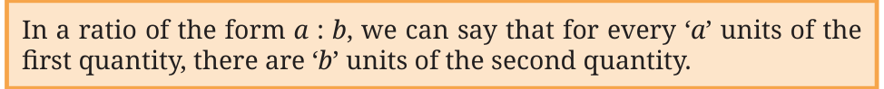

We use the notion of a ratio to represent such proportional relationships in mathematics.
We can say that the ratio of width to height of image A is
60 : 40.
The numbers 60 and 40 are called the terms of the ratio.
The ratio of width to height of image C is 30 : 20, and that of image D is 90 : 60.

So, in image A, we can say that for every 60 mm of width, there are 40 mm of height.
We can say that the ratios of width to height of images A, C, and D are proportional because the terms of these ratios change by the same factor. Let us see how.
Image A — 60 : 40
Multiplying both the terms by \(\frac{1}{2}\), we get
\(60 \times \frac{1}{2} : 40 \times \frac{1}{2}\)
which is 30 : 20, the ratio of width to height in image C.
By what factor should we multiply the ratio 60 : 40 (image A) to get 90 : 60 (image D)?
A more systematic way to compare whether the ratios are proportional is to reduce them to their simplest form and see if these simplest forms are the same.